Decision alignment
Learn bounded, set-wise corrections from future–goal descriptors and ordinal structure. Restricted predictor adaptation offers a complementary source of decision evidence.
Explore the modules ↗Decision-aligned world modeling
Predictive geometry describes futures. D-JEPA learns which relations among those futures produce better actions.
Built on pretrained predictive models, D-JEPA aligns candidate futures where actions are selected, integrates complementary predictive geometries through ordinal evidence, and writes the aligned structure back into future representations.
Predictive geometry and decision quality are not the same thing. The distance that makes a future look promising need not rank the candidate actions by their physical outcomes.
Learn the decision-relevant relations between candidate futures, then use those relations to align action selection.
The decision boundary is a learning target—not just a property inherited from pretraining.
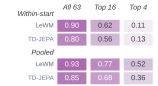
Predictive geometry → candidate ordering → physical outcome
Author-drawn illustration forthcomingPredictive models · Relational alignment · Future representation
Reserved for the final hand-drawn overviewLearn bounded, set-wise corrections from future–goal descriptors and ordinal structure. Restricted predictor adaptation offers a complementary source of decision evidence.
Explore the modules ↗Combine relational evidence from complementary predictors in one alignment framework, extending beyond a single predictive distance.
Read the protocols ↗Encode a learned decision ordering in JEPA-compatible goal-distance geometry, and learn bounded, same-action updates across future time steps.
Explore checkpoints ↗PushT exact realization preserves earlier futures and encodes terminal ordering while retaining its embedded predictive and relational computation. Reacher learns same-action five-step future updates; its reported physical decisions use the relational selector. These experiments establish complementary mechanisms and do not imply a newly evaluated combined checkpoint or single-backbone distillation.
Matched candidate sets isolate the quality of action selection across simulation, foundation models, autonomous driving and physical manipulation.
+4.30 pp over LeWM
Independent decision-boundary evaluation
+15.04 pp over native VLA selection
Four language-conditioned tasks
+17.0 pp over V-JEPA 2-AC
PushT and two-cube stacking
+37.98 over Drive-JEPA ranking
Seven difficult scenes
| Task | Evaluation | Matched reference | D-JEPA | Gain |
|---|---|---|---|---|
| PushT | Success · 256 starts | LeWM · 83.59% | 87.89% | +4.30 pp |
| DMC-Reacher | Success · 128 starts | LeWM · 86.72% | 93.75% | +7.03 pp |
| Granular | Strict attainment · 64 starts | DINO-WM · 7.81% | 18.75% | +10.94 pp |
| Each task retains its own evaluation population and success criterion. Granular reports the strict Chamfer-distance threshold. | ||||
| Setting | Metric / scale | Matched reference | D-JEPA | Gain |
|---|---|---|---|---|
| Held-out PushObj shapes | Success · 300 starts | Calibrated fusion · 44.67% | 53.67% | +9.00 pp |
| Appearance changes | Mean success · 7 conditions | Calibrated fusion · 62.86% | 73.14% | +10.29 pp |
| RoboTwin | Strict success · 4 tasks | Native VLA · 61.72% | 76.76% | +15.04 pp |
| Physical PiPER | Macro success · 2 tasks | V-JEPA 2-AC · 64.0% | 81.0% | +17.0 pp |
| Autonomous driving | Mean PDMS · 7 scenes | Drive-JEPA · 57.36 | 95.34 | +37.98 |
| Appearance changes are evaluated on 50 new base starts per condition; RoboTwin uses 128 starts per task and PiPER 50 paired trials per task. Driving reports mean PDMS over seven difficult scenes. | ||||
Each row retains its own task metric and evaluation population. Full counts, paired outcomes and task-specific costs remain available in the paper and the decision-supervision dataset.
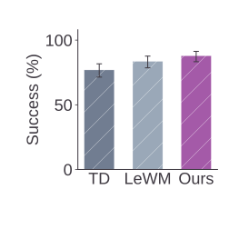
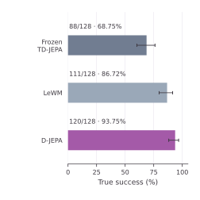
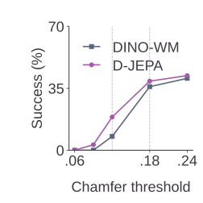
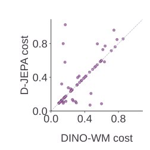
TD denotes TD-JEPA; Ours denotes D-JEPA. Bars show success with 95% intervals, the curve varies the Granular success threshold, and each scatter point is one paired start. Click a panel to open the vector figure.
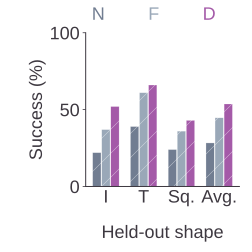
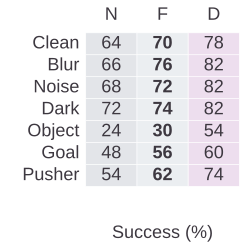
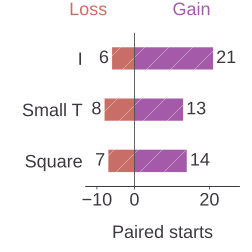
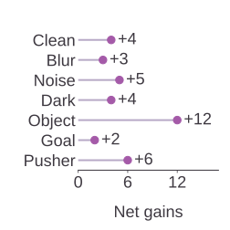
N: native selection; F: calibrated fusion; D: D-JEPA. Paired gains and losses compare D-JEPA with calibrated fusion on identical starts.
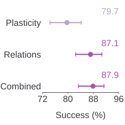
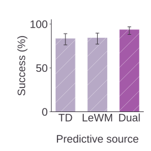
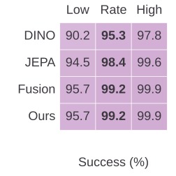
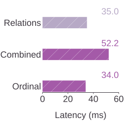
The module and latency panels use the independent 256-start PushT population; Combined denotes calibrated composition. Source and multi-geometry ablations use the separate 128-start mechanism evaluation; Low and High denote the 95% interval bounds.
| Configuration | Decision readout | Success | Median inference |
|---|---|---|---|
| Relational alignment | Relational score | 87.11% | 35.03 ms |
| Calibrated composition | Gated composition | 87.89% | 52.16 ms |
| Ordinal realization | Native goal distance | 87.11% | 34.02 ms |
| Independent PushT evaluation, 256 starts. Ordinal realization recovers 100% of relational action choices and candidate ranks through native goal distance. Timing includes the predictive and relational computation, measured per start. | |||
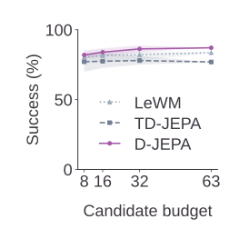
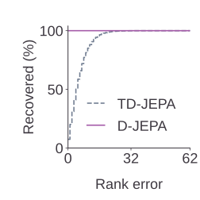
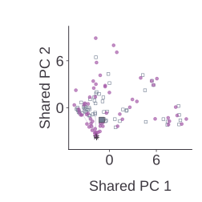
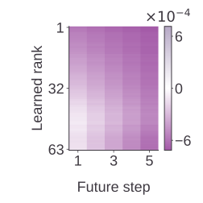
The first three panels show PushT candidate-budget and ordinal-realization analyses; the final panel shows the separate Reacher five-step representation diagnostic. Budget bands span the minimum and maximum over 16 shared subset seeds.
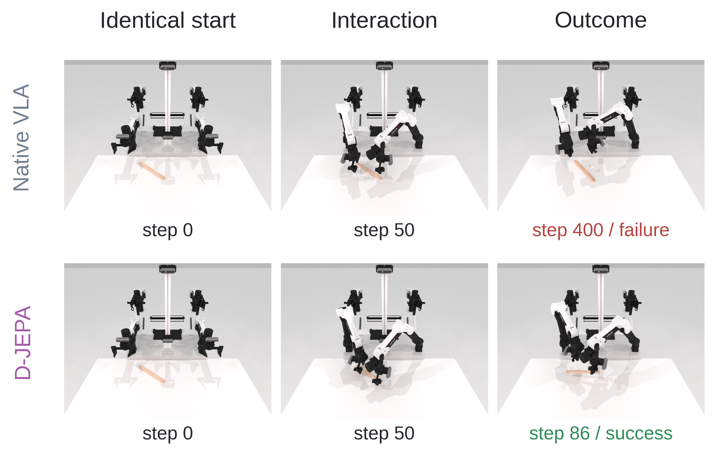
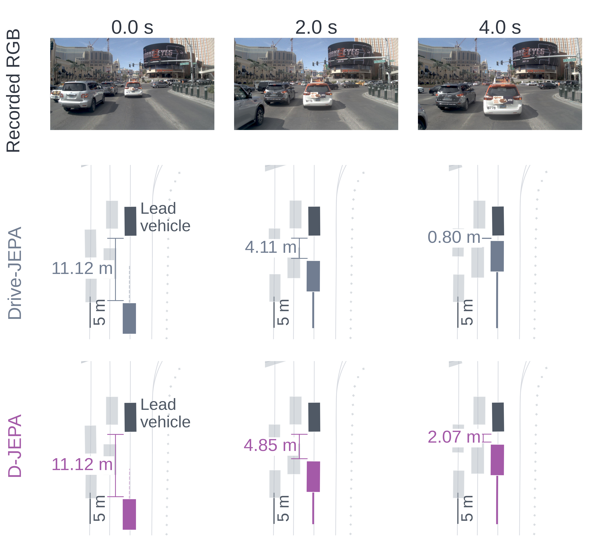
Curated baseline-failure / D-JEPA-success examples. These illustrate gains; aggregate results include gains, losses and ties.
All 25 control actions of the fixed-horizon protocol, with initial context and terminal hold. This is not a receding-horizon full-task episode.
View the high-resolution timeline ↗Full fixed 25-control-step sequence. Success is measured against the target joint configuration.
View the high-resolution timeline ↗All five actions and settling steps. High-resolution replay costs retain their own measured values; they do not replace formal aggregate measurements.
View the high-resolution timeline ↗Task-specific checkpoints, decision supervision and a compact evaluation package.
Start with the independent PushT cached-decision replay, then reproduce the relational, composition and representation-realization paths from the same released protocol.
Full reproduction guide ↗pip install -e '.[download]'
python scripts/download_artifacts.py --profile pusht-relational --dataset
python -m zipfile -e data/D-JEPA-supervision-v1.zip data
bash scripts/reproduce.shTask interfaces: robotic manipulation · autonomous driving · physical-robot workflows. Each guide describes inputs, training and evaluation commands, and environment dependencies.
The website reports completed evaluations only; release artifacts and protocol notes preserve the corresponding evidence identities.
{kind=link}
{kind=link}
{kind=link}
{kind=link}
{kind=link}
{kind=link}
{kind=link}
{kind=link}
{kind=link}
{kind=link}
{kind=link}
{kind=link}
{kind=link}
{kind=link}
{kind=link}
{kind=link}
{kind=link}
{kind=link}
{kind=link}
{kind=link}
{kind=link}